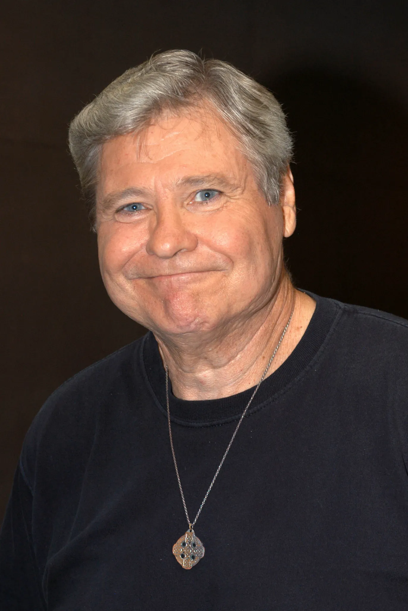

Ben Jones, Best Known as Cooter on 'The Dukes of Hazzard,' Dies at 84
Entertainment | Television
Published: Monday, August 10, 2026

Ben Jones, the actor who brought the memorable mechanic Cooter Davenport to life on "The Dukes of Hazzard," has died at the age of 84.
Jones' wife, Alma Viator, confirmed the news in a social media tribute. She said Jones suffered a fatal heart attack at their home on Sunday while preparing to watch the Atlanta Braves take on the New York Yankees.
Viator remembered her husband as someone who lived a full life and was deeply loved by those around him. She described his death as an enormous personal loss and expressed her love for him in her tribute.
For millions of television viewers, Jones will forever be associated with Cooter Davenport, the good-natured but rebellious mechanic who became an important part of the world of "The Dukes of Hazzard."
The CBS series debuted in 1979 and followed cousins Bo and Luke Duke as they navigated life, trouble and plenty of high-speed car chases in fictional Hazzard County.
Cooter operated the local garage and frequently found himself caught up in the Duke family's adventures. His loyalty, humor and willingness to challenge authority helped make him one of the show's recognizable supporting characters.
The series became one of the biggest television hits of its era. During its original seven-season run, it regularly attracted a large audience, with its first three seasons ranking among America's 10 most-watched television programs, according to Nielsen.
Jones remained with the production for all seven seasons. His connection to the franchise continued after the original series ended, as he returned for two television movies — "The Dukes of Hazzard: Reunion!" in 1997 and "The Dukes of Hazzard: Hazzard in Hollywood" in 2000.
He also embraced the show's enduring fan base through Cooter's Place, a museum and attraction celebrating the series.
Jones' relationships with his former castmates remained strong decades after the show went off the air. Last year, he publicly remembered Rick Hurst, who played Deputy Cletus Hogg, following Hurst's death.
Jones recalled knowing Hurst for more than four decades and described him as a person who could always make others laugh.
News of Jones' passing also prompted a tribute from Tom Wopat, who played Luke Duke. Wopat shared a photo of himself with Jones and remembered his former co-star as both a close friend and an important part of the show's history.
But acting was only one chapter of Jones' career.
After leaving "The Dukes of Hazzard," Jones entered the political world. He won a seat in the U.S. House of Representatives in 1988 and began representing Georgia's 4th Congressional District the following year.
Jones served as a Democratic member of Congress from 1989 until 1993. During his time in Washington, he held leadership responsibilities as a Democratic whip and served on committees dealing with veterans' affairs as well as public works and transportation.
His career was unusual in its range. Jones went from playing a fictional small-town mechanic on one of America's most popular television shows to representing Georgia in Congress.
For generations of fans, however, his most lasting legacy will likely remain Cooter Davenport — the mechanic, friend and troublemaker who became inseparable from the "Dukes of Hazzard" universe.
Jones leaves behind a career that stretched across entertainment, politics and decades of connection with the fans who never forgot the character that made him famous.